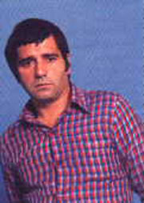
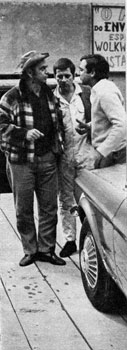
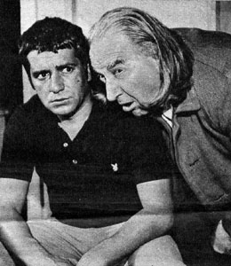
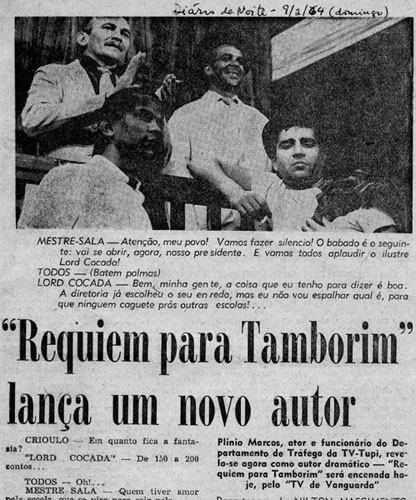
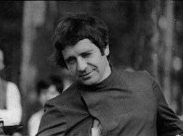

Palhaço Frajola & humorista
Na TV-5, de Santos, onde alcançou grande popularidade.
TV de Vanguarda
Participações no programa da extinta Televisão Tupi, SP.
Vitório · Beto Rockfeller
Criação do personagem na novela da TV Tupi, SP.
João Juca Júnior
Protagonista e papel-título da novela, TV Tupi, SP.
Bem-te-vi · Bandeira 2
Criação do personagem, TV Globo, Rio de Janeiro.
Vitório · A Volta do Beto Rockfeller
Retorno do personagem na série da TV Tupi, SP.
São Francisco de Assis · Teatro 2
Teleteatro da TV Cultura, dir. Ademar Guerra — proibido pela Censura durante as gravações.
Réquiem de Tamborim
Peça em 3 atos, TV de Vanguarda, TV Tupi, dir. Benjamin Cattan.
Macabô
Adaptação de Macbeth com Benjamin Cattan; a ação se passa num terreiro de macumba.
Os Últimos Mambembeiros
Novela infanto-juvenil; para driblar a censura, assinou como Pedro Marmo do Rosário.
Dentro da Noite
Seis capítulos de telenovela; o herói Neco, garoto pobre, torna-se marginal. Inédita.
Uma História de Subúrbio
Peça em 3 atos, história de futebol, exibida na TV Globo.
Pequena História do Samba de São Paulo
Especial para a TV Tupi, com Geraldo Filme, Zeca da Casa Verde e Toniquinho Batuqueiro.
CNT Jornal
Na TV Manchete, respondendo a telespectadores e comentando fatos da semana.
Todos os textos, manuscritos e/ou datilografados, encontram-se no acervo de Plínio Marcos, organizado por seus filhos.